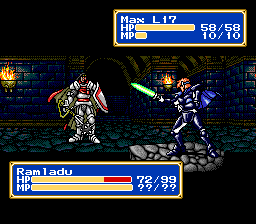
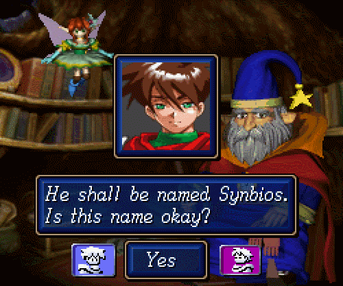

Select a ROM file (.md, .bin, .gen, .zip) from your computer:
I'm ripping off voupie.lol again, but I'm doing it to learn, soooooo... it's OK, right? Anyways, I've been a massive Sega fan all my life. I feel like I'm one of the biggest Sega fans out there. I owned a Japanese Mega Drive. My dream is to do the stream that Sharpie does where he's played through every single Sega game on the Master System, Mega Drive, Game Gear, Saturn, Dreamcast, etc.
As a challenge to myself, I set up an emulator in this webpage, that can run Sega Mega Drive games. This is only as a proof of concept, and I figure since no ROM is provided, this is not copyright infringement. At least not for the ROM.
I've also attached a Webamp thing of my 10 approximate favorite Sega Genesis songs. This one is hard, I think the Japanese composers for these games were geniuses.

